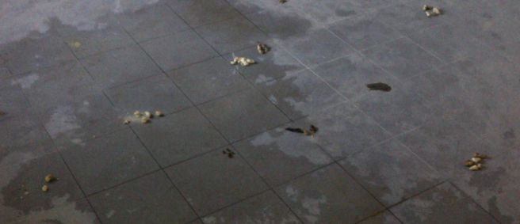

| Fecha de Publicación: 16/08/12 |
Bressán abraza a un negro

"Abrázame mi negrito"
[Leer más] |
Fecha de publicación: 15/08/12 |
Bressán lee la Sagrada Biblia
 Esta es una lectura muy recomendada a los niños
Esta es una lectura muy recomendada a los niños
[Leer más] |
Fecha de publicación: 15/08/12 |
El Bressanismo promueve las religiones

Religión, representación gráfica
"La religión, tal como la conocemos, siempre fue una gran fuente de alivio y bienestar. Por eso mismo Bressán quiere que esto se difunda para que los cuidadanos crean que son felices cuando en realidad les están dando por el traste. Aunque no se preocupen, que vivir en la ignorancia no tiene ningún coste."
[Leer más] |